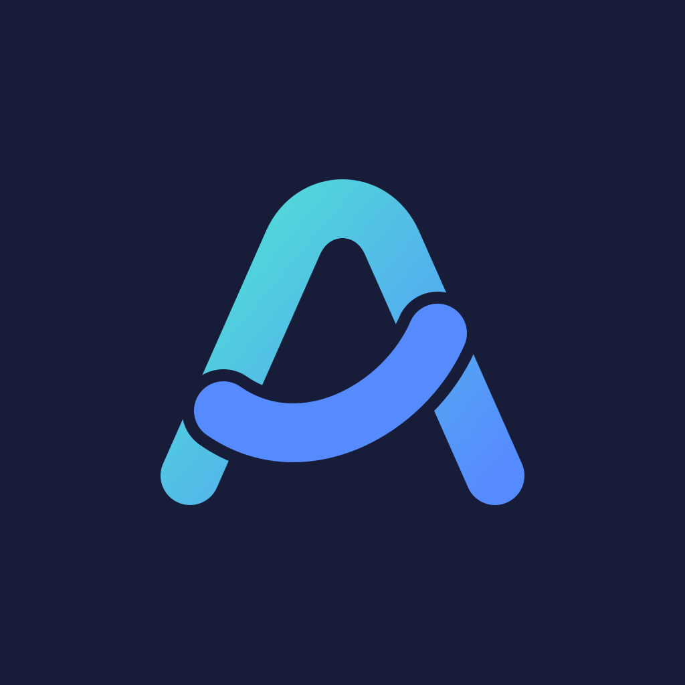

把工作空间带走
浏览 Mac 上的项目与历史对话，在多台已配对设备之间切换，找到你正在推进的工作。

ArcLink 弧连
把 Mac 上的 AI 工作流，带在身边。
用 iPhone
连接你的电脑，查看项目、继续对话，
让每一个想法，都有下文。
macOS 13+ · Apple Silicon / Intel ／ v0.1.5 测试版
BUILT FOR YOUR FLOW
电脑处理任务，手机保持连接。
熟悉的项目与对话，始终触手可及。
浏览 Mac 上的项目与历史对话，在多台已配对设备之间切换，找到你正在推进的工作。
在 iPhone 上发起 Codex 图文对话，查看实时回复。需要命令或文件审批时，由你做决定。
扫码配对，在 Mac 上确认授权。优先直连，必要时通过中继，让设备以合适的方式连接。
A SIMPLE START
下载并打开 ArcLink，将应用放入“应用程序”。准备好已登录的 Codex，保持 Mac 在线。
安装 iOS 客户端后，扫描 Mac 上的配对二维码，并在电脑上确认设备授权。
选择项目，新建 Codex 对话。发送文字或图片，在手机上查看回复与审批请求。
TAKE YOUR FLOW WITH YOU
为你的设备，选择合适的客户端。
macOS 13+ · Apple Silicon / Intel
macOS 测试版，已完成签名完整性校验，尚未经过 Apple 公证。 首次打开若被阻止，请进入“系统设置 → 隐私与安全性”，点击“仍要打开”， 按系统提示输入 Mac 登录密码或使用 Touch ID，再确认打开。 若没有此选项或仍提示“已损坏”，请重新下载最新安装包并联系我们。
iPhone 客户端正在准备中，敬请期待。
需要一台保持在线的 Mac，以及已安装并登录、版本受支持的 Codex。iPhone 端需要安装 ArcLink 并完成扫码配对。目前 Mac 下载支持 Apple 芯片和 Intel， 需要 macOS 13 或更新版本。
手机断线不会主动停止 Mac 上的 Agent 进程，但 Mac 需要保持在线。手机回到前台后会尝试恢复连接；iOS 后台持续连接、Mac 退出或重启后的任务恢复不作保证。
目前提供 Apple Silicon Mac 测试版。iOS 尚未开放下载，Intel Mac、Windows 和 Linux 暂未提供安装包。